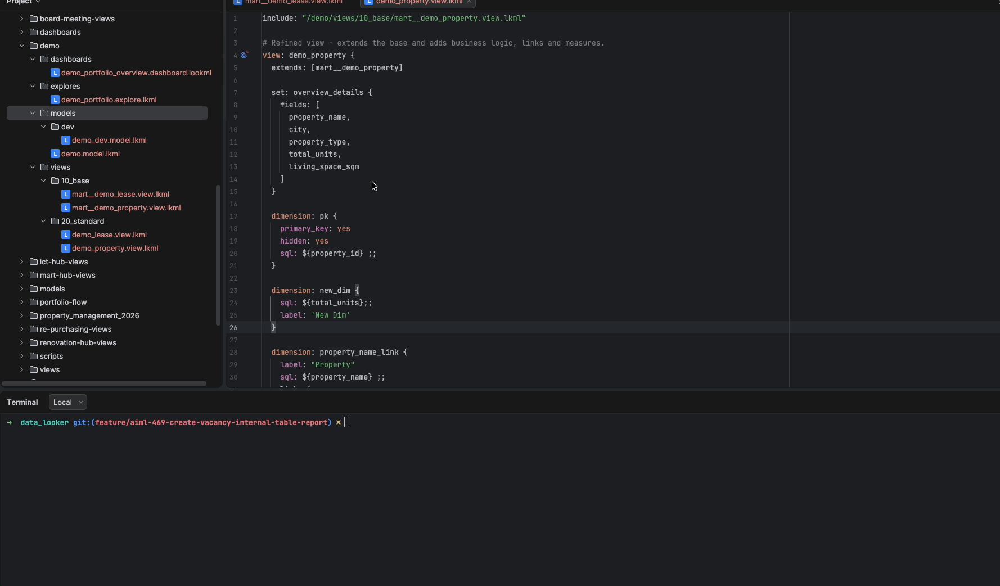
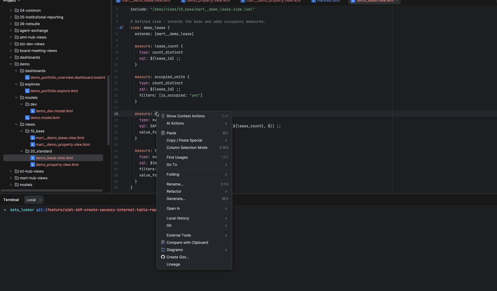
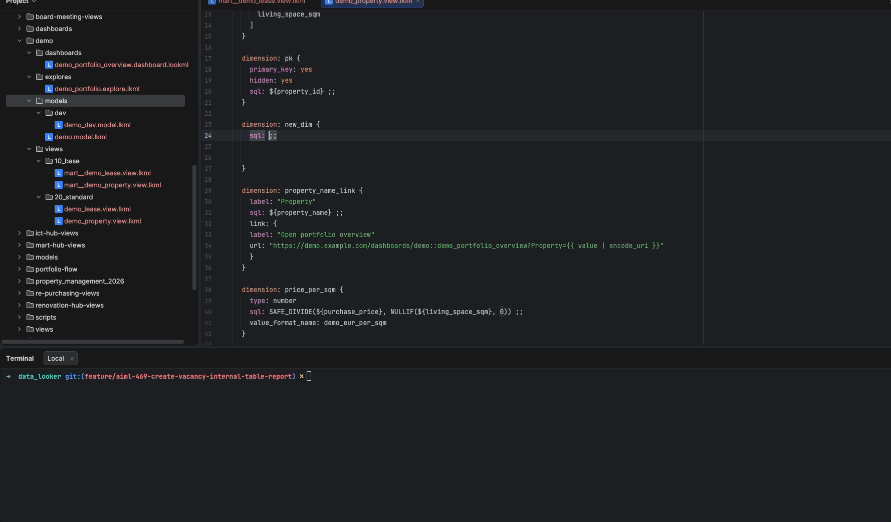

Looker Modeling Language for IntelliJ IDEA, PyCharm and other JetBrains IDEs. Highlighting, completion, validation and formatting - right in your editor.
Get it on the JetBrains Marketplace Source on GitHub.lkml / .lookml - keywords, strings, SQL blocks, field references.sql: field suggestions.

sql:.
Free to install. Reading LookML and basic editing are free forever. The productivity features are Pro, with a free trial.
| Capability | Free | Pro |
|---|---|---|
| Syntax highlighting | ✓ | ✓ |
File type recognition (.lkml, .lookml) | ✓ | ✓ |
| Folding, commenting, brace matching, quotes | ✓ | ✓ |
| Color settings | ✓ | ✓ |
| Code navigation (go-to-definition, go-to-implementation/super) | - | ✓ |
| Find usages (every reference to a view or field) | - | ✓ |
| Refactoring (safe rename across the project) | - | ✓ |
Code completion & auto-suggestions (150+ properties, in-sql: fields) | - | ✓ |
| Dashboard validation (schema-backed) | - | ✓ |
| Code formatting (Reformat Code + YAML rewriter) | - | ✓ |
After the trial, activate Pro via Help | Register (JetBrains account + license). Free features keep working regardless.
Pro is launching at an early one-time price. Buy once and own it for good, including every Pro feature added next - a Pro license includes future updates free. The price rises as the plugin grows, so early buyers lock in the lowest price.
Current promos live here. If you already use the plugin, check this before you buy.
Launch thank-you - 70% off Pro. The productivity features are now Pro (your free features keep working with no license). As a thank-you to existing users there are 100 discount codes for 70% off. Email andrii.kobtsev@gmail.com and I will send you a personal code - first come, first served. The offer closes once the 100 codes are gone or on 31 July 2026, whichever comes first. Buy at the founding price and you lock it in: future Pro features arrive as free updates.
Actively in progress. A Pro license includes these as free updates when they ship, and the founding price rises as they land.